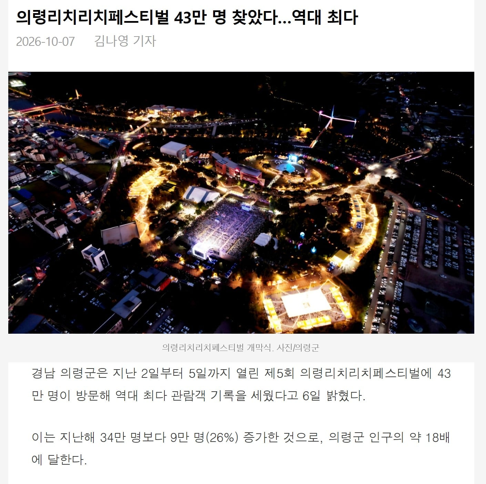

오

오
의령분들 모두 부자되시길
그 남지수변공원 쪽에 의령-함안-창녕 이어주는 다리 하나 지으면 좋겠다
백제 문화제는 12만이 왔다는데 공주 인구가 9만인가 인걸로 아는데… 진짜 어마어마 한듯
그제 야허
의령이 은근히 볼게 많던데 저기 시장에 소바도 맛있고 내가 떡 안 좋아하는데도 망개떡이 맛있었다
왜 리센느때문임?
그냥 리센느 아저씨 팬들 호들갑임
리센느가 공연하러감
리센느 온날 공연한 저 근처에 있는 편의점 식당 등등 뭐든 다 팔려서 먹는거 씨가 말랐다고 댓글 봤는데
사람 너무 많아서 전화도 안 터진다고 하더마 ㄷㄷㄷ 요새는 리센느만 가수여 ㅋㅋㅋㅋ
리센느 다음날 갔다왔는데도 사람들 겁나 많았음. 애들 데리고 다니기 좋았음.
리센느 파워 실감이 나네
50대 60대도 다들 아시더라 대단하긴한듯
덜컹 덜컹 달려간다 시골버스야~~
예능돌이 대세다
40만이면 지리네
의령 야호~